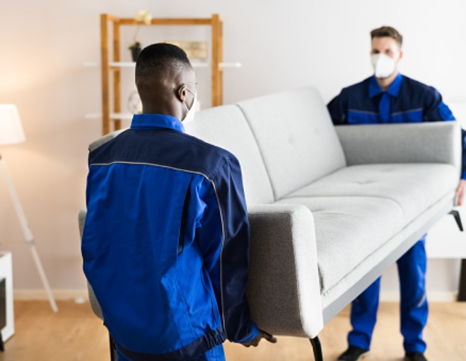
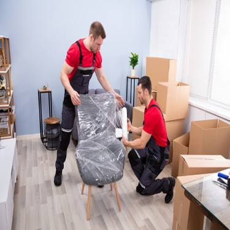
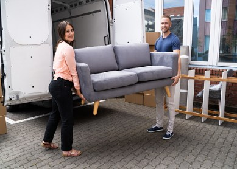
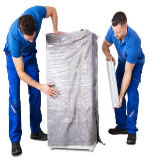

Skywing Cargo Packers
Packers and Movers in Hyderabad
Careful packing, safe transport and door-to-door service for homes and offices.
Packers and Movers in Hyderabad – Skywing Cargo
This update from Skywing Cargo contact person Rahul covers the trends seen in April. Demand for packers and movers in Hyderabad has risen sharply as summer approaches and the academic year ends. The team has been learning a lot about packaging, so that damage is controlled and every relocation is delivered safely.
Latest Customer Feedback
I am extremely satisfied with the quality of service from Mr Rahul and the Skywing Cargo team. They were professional, understanding and patient. They took only 3 days from Hyderabad to Bangalore to deliver the goods to my home town, and none of my goods were missing or damaged. The whole team was cooperative through the entire process, from moving to the final destination, and the care they took with our belongings built a strong trust.
Because their online applications are active, we could track the movers' location, the bill was generated on the spot, an online receipt was issued, and a trust bond was signed by the team lead. Their guarantee of work satisfaction made us very comfortable with our valuables. None of the goods were broken or damaged, and we are truly happy with their effort.
Some of the key service highlights were:
- Cooperative team
- Guarantee for safety
- Punctuality towards time and work
- Organized documentation
- Door-to-door service
- Budget-friendly service
- Customer satisfaction
- Bond security
All in all, my experience with Skywing Cargo Packers and Movers in Hyderabad has been wonderful. Thank you, Mr Rahul and the whole service team. I would be happy to choose the service again.
Why choose the best packers and movers in Hyderabad?
A good move depends on a professional team and careful planning from start to finish. Contact Rahul at Skywing Cargo for a face-to-face meeting, where his 20+ years of experience helps keep costs well optimised.
After a free home visit, our team checks the actual articles and the effort needed to dismantle and reassemble them. We then assign skilled labour for packing, loading and unloading, with high-quality packaging for sensitive items such as LCD/LED TVs and home theatre systems.
Many customers today own premium sofa sets worth ₹2–3 lakh, or imported smart beds, workstations and dining tables that need specialised handling. Our trained team knows how to move these safely, which lowers the risk that comes with ordinary, untrained manpower.
Want to hear from our customers first? Ask us for references. A video review from a customer within the last 90 days can be shared on request.
Contact Mr Rahul for the best shifting service for your home →
Guidelines to know before hiring Packers and Movers
Moving brings a lot of unforeseen aspects. More people now turn to professional moving companies such as Skywing Cargo, whether for job commitments or for a better quality of life.
Many customers are unaware of the benefits of on-demand packers and movers in Hyderabad. With proper planning and packing, moving can be less stressful and more efficient for everyone involved. With so many options available, here are some guidelines to help you get started.

Do the research and get the best services
You have two options when choosing packers and movers in Hyderabad. The first is a personal reference from a friend or family member. Referrals can also come from social media groups or your own network.
The second is to choose an established company such as Skywing Cargo, which handles all your needs in the shifting process.
The importance of being well-organised
This information comes from the owner of Skywing Cargo, located in Hyderabad and operated by Mr Rahul. It is meant for people planning a house, flat or commercial relocation who want to understand why a reputed company quotes what it does.
The main factors that affect cost are:
- The quality of the labour, trained specifically for relocation.
- The packing strategy, including packing material and how items are handled.
- The distance, and the type and size of the articles being moved.
- Whether a dedicated or shared vehicle is needed, especially for intercity or all-India moves.

For short local moves with sturdy items, basic handling may be enough. Delicate furniture and electronics need dedicated care and extra manpower to reduce the chance of damage, depending on size, weight and quality.
Ask about the quotation. Make sure there are no hidden charges at unloading. Check the documentation and take the return memo for the delivery status and the commercials agreed.
Before you pack: clear out items you no longer need and donate old clothes. Keep fragile objects such as ornaments, keepsakes and dinnerware in a safe place, and store liquids and razor blades apart from books. Keep a moving checklist on hand throughout the process, which Skywing Cargo can help you organise.
Advantages of hiring expert movers and packers

Hiring a reliable moving company such as Skywing Cargo to pack and transport your belongings has many benefits over doing it yourself. With an experienced team on your side, you can rest assured that your belongings are in good hands and stay free of relocation worries.
Skywing Cargo packs your belongings carefully and transports them safely to your new home or apartment, supporting you at every step and saving you a great deal of time and effort.
Another benefit is the security your belongings receive throughout the move. Your valuables are handled with care by professionals. If you relocate from one place to another, goods transportation insurance is also available.
When relocating your house, it is best to enlist a professional moving and packing service like Skywing Cargo.
General home moving insurance, goods and services
Make sure your cargo is covered by damage insurance, so there are no difficulties if something goes wrong. By stating the right value, you can keep the claim process as simple as possible.
Moving insurance from a reputed company like Skywing Cargo helps ensure your valuables are covered throughout the relocation. Please confirm the exact coverage and terms with us before you book.
Get the best expert movers and packers services
Skywing Cargo provides packing, moving and transportation services. House relocation is our most popular service, and we also handle:
- Office relocation
- Commercial product relocation
- Industrial goods relocation
- Bike relocation
- Vehicle transportation
- International relocation
- Warehousing and storage
- Pets and plants
- Speciality and fragile items
- Goods transit insurance
Our team takes care of packing, unloading, shipping, unpacking and rearranging for every customer.

Overview
Many families and businesses have moved with our help. We understand that working out what should and shouldn't be done adds to the anxiety of relocating, and you don't want extra stress in an already stressful situation.
When you entrust Skywing Cargo with your valuables, you don't have to worry about their safety or prompt delivery. You receive written assurance that your items will be delivered on time, and if the delivery is delayed, the customer has the right to seek compensation.
A team from Skywing Cargo will be at your home as soon as you hire us, and will carry your belongings to your new house in Hyderabad.